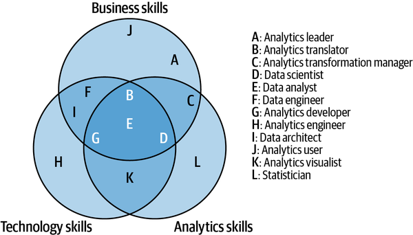
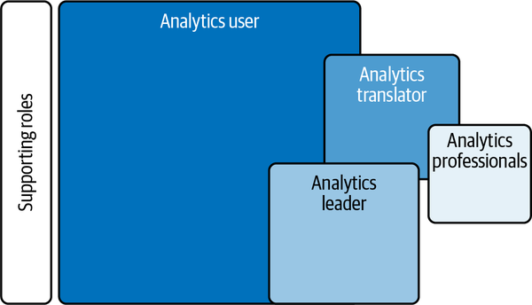
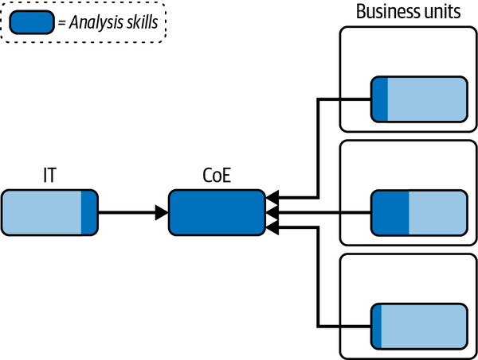
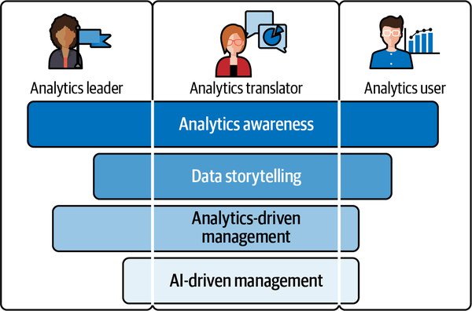
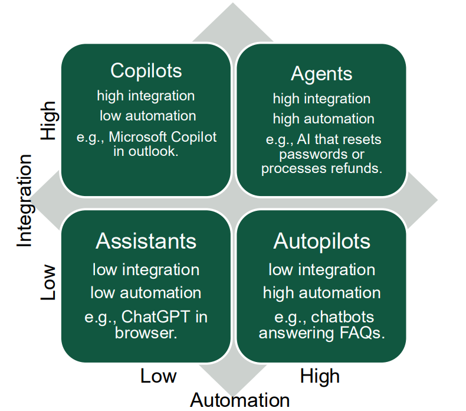
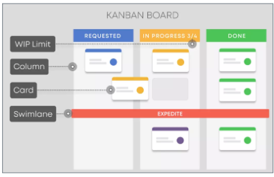

Preparing People
Preparing people for Augmented Analytics (AA) means aligning technical, organizational, and human readiness. Chapter 4 of Augmented Analytics (Weber & Zwingmann, 2024) emphasizes that transformation succeeds only when analytics becomes part of everyday work — supported by leadership, literacy, and structured enablement. The chapter outlines four key personas — leaders, translators, users, and professionals — each requiring tailored skills and programs. A Center of Excellence (CoE) anchors this effort by coordinating strategy, training, and governance, ideally evolving from a centralized model to a federated structure that balances expertise with local ownership.
This section also introduces workflow augmentation, where insights are embedded directly into processes through copilots, adaptive assistants, and collaborative tools, rather than delivered via static dashboards. This shift demands cultural change, strong API-based infrastructure, and a curated use-case library to share lessons and scale innovation. Finally, Weber and Zwingmann highlight human barriers — bias, overconfidence, and learned helplessness — and stress that sustainable analytics maturity depends on cultivating data literacy, storytelling, and a belief that people, not just technology, drive transformation.
Reference:
Chapters 4 and 5 from Weber, W., & Zwingmann, T. (2024). Augmented Analytics.
O’Reilly Media, Inc.
Available at: https://learning.oreilly.com/library/view/augmented-analytics/9781098151713/
Preparing People and the Organization
Preparing people and the organization for Augmented Analytics means building both the skills and the culture needed to embed analytics into daily decision-making. Leaders must champion data-driven practices, analytics translators must bridge business and technical teams, and employees need at least analytics awareness to trust and act on insights. A Center of Excellence (CoE), executive sponsorship, and structured training ensure that AA is not just a technology upgrade but an organizational transformation.
Three principles guide this work:
- Focus on roles and personas — leaders, translators, users, and professionals — to structure the analytics transformation. Different roles need different skills; a one-size training program does not work.
- Build both technical readiness (data infrastructure and processes) and human readiness (mindset, skills, and awareness). Technology without cultural change fails; cultural change without infrastructure also fails.
- Establish a Center of Excellence (CoE) to drive transformation, ideally business-anchored and federated over time. A CoE is an organizational unit set up to concentrate expertise, best practices, and resources around a specific domain or strategic priority.
The Four Analytics Personas
Tailoring Augmented Analytics for Different Roles


Four distinct personas shape the analytics transformation. Each requires a different investment in training, tools, and enablement:
- Analytics Leader — champions a data-driven culture and aligns insights with organizational strategy. Needs to understand AI’s strategic potential without necessarily building models themselves.
- Analytics Translator — bridges the gap between business and technical teams, identifying valuable use cases and ensuring they deliver measurable business value. Often the most critical — and hardest to develop — role.
- Analytics User — the majority of the workforce. Consumes insights to make better day-to-day decisions. Does not need deep technical skills, but does need enough analytics awareness to trust and act on data.
- Analytics Professional — the technical experts who build, deploy, and maintain analytics solutions. Includes data engineers, data scientists, and BI developers.
The Center of Excellence
What a CoE Does
A CoE is the organizational unit dedicated to coordinating the analytics transformation. During the Data Active maturity phase, it collects and connects the loose threads of analytics activity that emerge organically across the organization — before they become silos.
Core responsibilities include:
- Promoting data literacy and data liberalization across the organization — making data accessible to more people.
- Building quick-win use cases — often called “lighthouse” projects — that demonstrate visible, early value and build momentum.
- Creating shared governance frameworks and a data-driven culture.
- Supporting business units and connecting their analytics strategies into a coherent whole.
- Inspiring people across the company to take ownership of analytics rather than treating it as the IT department’s job.

Approaches to Organizing a CoE
Three structural models exist, each suited to a different stage of organizational maturity:
Decentralized approach — common in early-stage, Data Reactive organizations. Business units develop analytics independently, often using ad hoc tools (Excel, VBA, Python, R). Each team has high autonomy and domain knowledge but no coordination. The result: duplicated effort, inconsistent data definitions, and no shared infrastructure. This approach is tempting but unsustainable without stronger coordination.
Centralized approach — a single CoE or IT unit manages analytics, reporting, and infrastructure for the entire organization. This produces efficient, consistent solutions but creates a bottleneck: business units wait for the central team, which lacks deep domain knowledge and produces generic outputs. Works for early stages or small organizations, but limits growth and responsiveness over time.
Federated approach — a hybrid that balances centralized expertise with decentralized ownership. The CoE starts as a strong driver, then gradually shifts routine analytics responsibility to business units as data literacy grows, while retaining a center for advanced challenges, governance, and standards. This model builds a stronger data culture and faster responsiveness, but requires strong governance and patience. It is the most effective path to Data Progressive (stage 3) maturity.
Human Barriers to Analytics Adoption
Three psychological barriers consistently slow analytics adoption — and they cannot be solved by better technology alone:
- Inherent bias — we are often unaware of our own knowledge gaps because of the Dunning-Kruger effect: the less we know, the more confident we tend to be that we know it. We don’t know what we don’t know, which makes it hard to ask the right questions.
- Perceived solvability — people often assume that complex problems can be solved without rigorously testing approaches. In AI environments this is especially common, because the technology produces impressive-seeming results in ways that feel like magic. Organizations must help people understand that finding the right solution involves structured iteration, validation, and often failure before success.
- Learned helplessness — repeated mistakes or negative experiences can lead individuals to believe they are incapable of improving. This often develops when people are asked to work with data tools that are not designed for their skill level. Organizations must create early wins and build on them to instill the belief that effort leads to progress.
Cultivating Data Literacy
The Four Competencies
Weber and Zwingmann identify four key competencies that collectively constitute organizational data literacy:

- Analytics awareness — helps non-specialists understand data processes, quality, visualization, and core AI/ML concepts. Fosters realistic expectations for AI projects and effective communication with data professionals. This is the minimum floor for every employee.
- Storytelling with data — translates complex insights into clear, audience-appropriate narratives. Requires mastering visualization, decluttering, and tailoring tone and context to make data compelling and actionable. Essential for translators and analysts who present to decision-makers.
- Data-driven management — managers must commit to analytics strategy, ensure data integrity, and integrate analytics into decision-making rather than overriding it with intuition. Essential for all managers.
- Leading in the age of AI — leaders need to progress from AI awareness to active engagement. Competencies include identifying AI opportunities, managing AI project lifecycles, and integrating AI into business strategy. Essential for executives and senior leaders.
Enablement Programs by Role
Different roles require different levels of investment in data literacy:
| Role | Minimum Literacy Level | Program Types |
|---|---|---|
| Analytics user | Analytics awareness | Workshops, e-learning, onboarding modules |
| Analytics translator | High literacy | Deep dives, ThinkLabs, mentoring, project presentations |
| Analytics leader | Awareness + storytelling + leadership AI | Executive roundtables, leadership summits, peer learning |
| Analytics professional | Full technical competency | SQL, Python, R, statistics, ML, ongoing technical training |
Workflow Augmentation
What Augmented Workflows Are
A workflow is the repeatable sequence of steps, tasks, and decisions employees follow to achieve a business outcome. Augmented Analytics succeeds only when insights are embedded inside workflows, not delivered separately in dashboards that require users to seek them out.
The difference matters: a static dashboard that a sales rep must open and interpret is a tool; an alert that surfaces inside the CRM at the moment the rep opens an account record is augmentation.
Five Types of Workflow Augmentation
The five types represent a progression from simple rule-following to sophisticated human-AI collaboration:
- Fixed-rule, high-confidence augmentation — automated actions triggered when preset conditions are met. Works best for routine, well-defined tasks with clear right answers. Example: automatically routing a claims form when a risk score exceeds a threshold.
- Idea and insight enrichment — surfaces predictions, benchmarks, and visualizations to support human decision-making. Acts as a “copilot” that shows relevant context without making the final call. Example: showing an underwriter a benchmark risk score alongside a new application.
- Conversational augmentation — uses generative AI and LLMs in interactive assistants that respond to natural language queries. Example: GitHub Copilot for coding; an AI chat tool for summarizing a complex contract.
- Contextual (adaptive) augmentation — learns from users’ role, history, and current task to tailor what it surfaces. Example: a recommendation system that adapts to a user’s past decisions.
- Collaborative augmentation — enhances teamwork through shared dashboards, repositories, and integrated chatbots. Example: an Azure chatbot integrated into Microsoft Teams for real-time compliance support.
Finding Workflows to Augment
The Analytics Use-Case Approach
Use the Analytics Use-Case Approach: a structured pipeline that moves an initiative from idea to production, with formal evaluation gates at each stage:
| Stage | Purpose |
|---|---|
| Idea | Identify the opportunity and business problem |
| Concept | Define scope, stakeholders, and expected value |
| Proof of concept | Test the approach on a small scale with real data |
| Prototype | Build a working version with a limited user group |
| Pilot | Deploy to a broader audience and measure impact |
| Product | Scale to full production with monitoring and maintenance |
Each phase evaluates risk, ROI, and maturity before committing additional resources. The approach prevents organizations from investing heavily in use cases that fail at a basic proof-of-concept level.
Automation vs. Integration
Workflows also vary along two dimensions — the degree of automation (how much is done without human involvement) and the depth of integration (how deeply embedded in existing systems). These two axes produce four categories of AI workflow:

The recommended approach is to start with assistants and copilots — which support humans without replacing them — before scaling to autopilots and fully autonomous agents. This builds organizational trust and allows time to validate the AI’s judgment before increasing its autonomy.
The Use-Case Library
A use-case library is a central repository that tracks all analytics initiatives from idea to deployment. It creates organizational memory: when a business unit builds a successful use case, the library captures the approach so others can replicate or adapt it rather than starting from scratch.
Benefits include transparency, ongoing monitoring, cross-team innovation sharing, cultural motivation, and stakeholder visibility. Well-run libraries typically include Kanban boards for tracking progress across stages, evaluation matrices for comparing use-case ROI, and documentation templates to standardize how lessons are captured.
A Kanban board is a visual workflow management tool that represents work items as cards on columns (e.g., Backlog → In Progress → Review → Done). It makes bottlenecks immediately visible and helps teams prioritize without lengthy status meetings.

Technical and Organizational Requirements
Flexible, vendor-independent integration is best achieved through APIs and microservices using REST, Python, or R.
REST (Representational State Transfer) is an architectural style for designing web services that communicate over HTTP. Its key benefit is decoupling: the front-end application (a Dash dashboard, a mobile app, an IoT device) does not need to know how the back-end analytics engine works — it just makes a request and receives a response. This allows analytics capabilities to be consumed by any application without rebuilding the core logic each time.
In the context of augmented workflows, REST APIs are recommended because they are modular (each endpoint does one thing well), secure (authentication and authorization are well-established), and reusable (the same API can power a dashboard, a chatbot, and a mobile alert simultaneously).
Common implementation challenges include:
- Legacy systems — older enterprise software often lacks modern API interfaces.
- IT dependencies — analytics teams frequently depend on IT gatekeepers for infrastructure changes.
- Governance and security — ensuring that API access is logged, audited, and permissioned appropriately.
- Regulatory compliance — particularly in healthcare and finance, data cannot flow freely between systems.
To address these, Weber and Zwingmann propose analytics contracts — formal agreements, similar to data contracts, that define how an analytics capability can be discovered, accessed, consumed, and trusted. They bring the discipline of software engineering (versioning, documentation, SLAs) to analytics integrations.